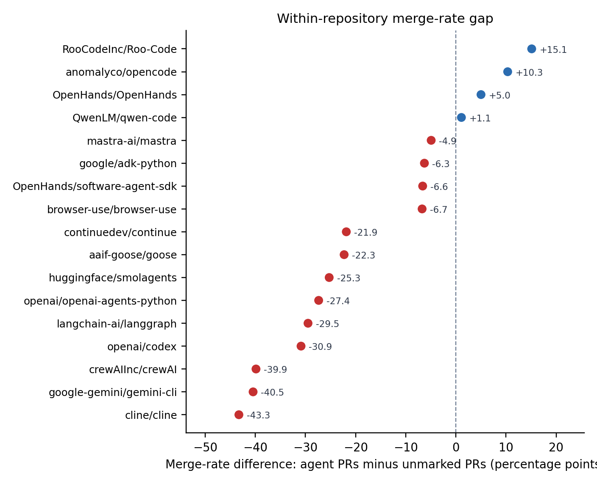
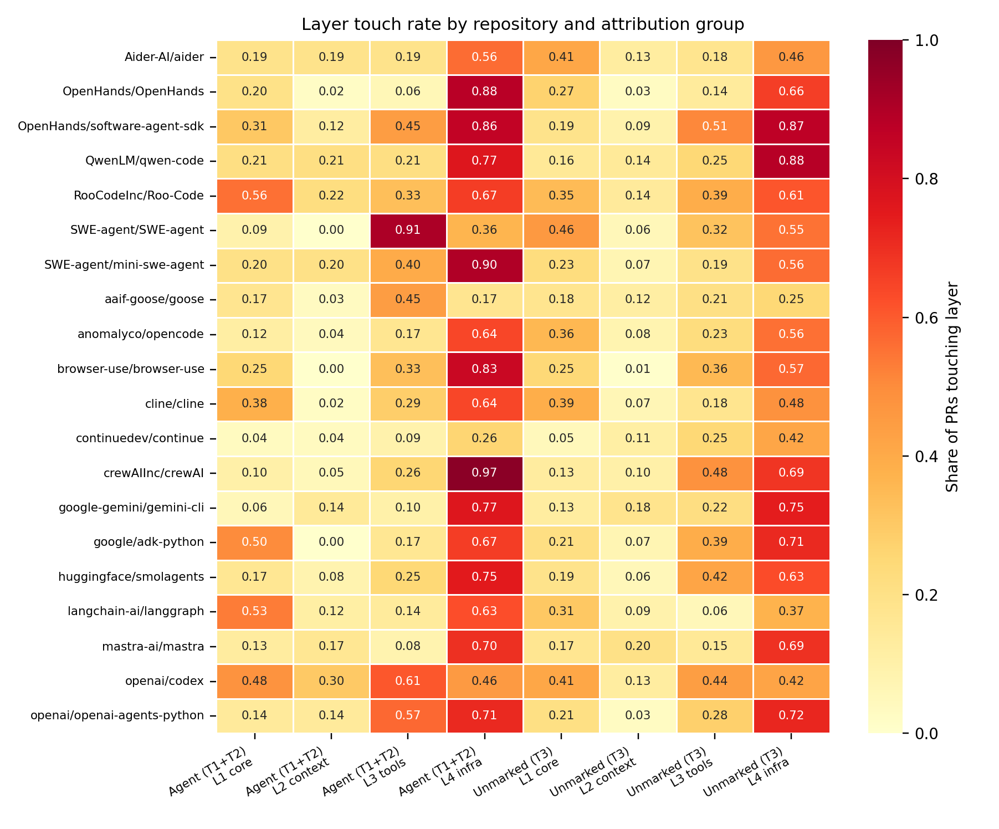
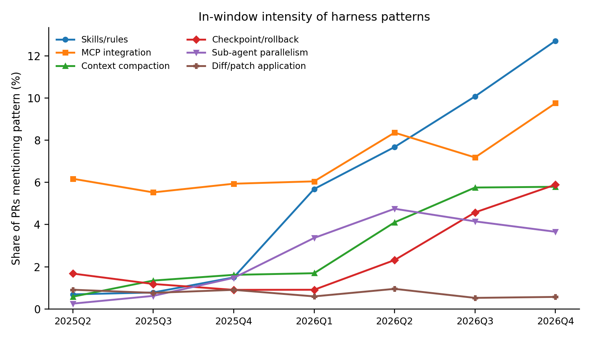

RQ1 · Attribution
5.2%
Explicit RSI is small but real
2.87% of decided PRs are autonomous-agent (T1), 2.33% co-authored/assisted (T2). Tier 3 is an unmarked baseline, so this is a lower bound on actual AI involvement.
Human versus Agent Authorship in the Recursive Self-Improvement of Open-Source Agent Harnesses
Agent harnesses—the loops, context managers, tool interfaces, and sandboxes that turn a language model into a working software agent—are now among the fastest-moving artifacts in open-source software. Claims of recursive self-improvement (RSI) imply that agents increasingly rewrite the very harnesses they run on. Yet there is little repository-level evidence about who changes which part of a harness, and whether such changes survive review.
We report a mining study of 20 open-source agent harnesses and runtimes, covering 135,331 pull requests created between May 2025 and November 2026. We introduce a three-tier attribution scheme (autonomous agent, co-authored/assisted, no explicit marker) and a pointcut taxonomy that separates the core loop (L1), context and memory (L2), tools and sandbox (L3), evaluation and infrastructure (L4), product surface (L0), and documentation (LD).
Explicitly agent-attributable PRs are 5.2% of decided PRs (T1 2.87%, T2 2.33%). Their merge odds are lower (Mantel–Haenszel OR 0.709, 95% CI 0.682–0.738), but the effect reverses in repositories that treat agents as first-class contributors. Autonomous agents are concentrated in L4 and L0: only 13.2% touch the core loop, versus 26.0% for unmarked PRs, and only 15.8% are structural changes, versus 22.9%. Co-authored PRs, by contrast, touch the core at 28.8% and are structural at 30.2%.
We read this as empirical support for a protected-variation discipline in harness engineering: agents are delegated to stable variation points, while humans retain the stable core. The findings reframe RSI as maintenance-layer self-improvement rather than architectural self-authorship, and identify repository governance—not agent brand—as the strongest predictor of agent contribution outcomes.
2.87% of decided PRs are autonomous-agent (T1), 2.33% co-authored/assisted (T2). Tier 3 is an unmarked baseline, so this is a lower bound on actual AI involvement.
The pooled odds ratio hides a split from +15 pp (Roo-Code, OpenCode, OpenHands) to −43 pp (Cline, Gemini CLI, crewAI). Repository governance, not agent brand, explains the sign.
T1 PRs touch the core loop half as often as unmarked PRs, and are structural less often (15.8% vs 22.9%). They concentrate in tests, UI, and documentation.
Co-authored PRs touch the core more often than either autonomous agents or unmarked humans, and are structural at 30.2%—human design plus agent execution.



The pipeline crawls PR metadata for all 20 repositories, samples 7,205 PRs for file/commit/review detail, and labels every PR with a three-tier attribution and a six-layer pointcut taxonomy.
The 506 MB SQLite database is not committed; the cleaned census and detail exports are. The full mining pipeline and analysis scripts are in the repository.
| Artifact | Where |
|---|---|
| Paper (PDF) | paper/main.pdf |
| LaTeX source | paper/main.tex |
| Census, 135,331 PRs | prs_census.csv.gz |
| Detail sample, 7,205 PRs | prs_detail.csv.gz |
| Statistical tables | reports/tables/ |
| Mining pipeline | pipeline/ |
| Human-review package | review_package/ |
120 PRs, balanced 20 per architecture layer and 7/7/6 across T1/T2/T3 within each layer. Every record embeds its file list with assigned layers, commit subjects, body excerpt, the full codebook, and a browser-side Cohen's κ calculator. No install, no server.
@misc{xiong2026whowrites,
title = {Who Rewrites the Loop? Human versus Agent Authorship in the
Recursive Self-Improvement of Open-Source Agent Harnesses},
author = {Xiong, Haoyi and Chai, Yekun},
year = {2026},
note = {Preprint}
}
The paper cites the Google harness line directly: OO-Harness (arXiv:2610.28380) and Harness² (arXiv:2610.14224).